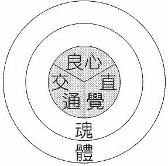

亚12:1 铺张诸天、建立地基、造人里面之灵的耶和华。
与诸天和地并列
撒迦利亚十二章一节说，主铺张诸天，建立地基，造人里面之灵。没有人能否认这三项─诸天、地、和人的灵─在神的创造里是重要的，为要完成祂的定旨。诸天被造是为着地，地被造是为着人，人被造是为着神。
撒迦利亚不是说“人”，乃是说“人…之灵”。这是因为人的灵是能接受神的器官，以享受神的生命和神的灵，并与神的灵是一。这就是为什么人的灵成为这样重要且要紧的，甚至达到与诸天和地并列的地步。
生命之气成为人的灵
箴言二十章二十七节说，“人的灵是耶和华的灯。”一般说来，灵的希伯来文是如阿克（ruach），但这里灵的希伯来文是奈夏玛（neshamah）。奈夏玛与创世记二章七节的气所用的是同字，在箴言二十章二十七节译为灵。借此我们能看见，神在人受造时，吹入人里面的生命之气，乃是人的灵。人的灵是我们里面与神的生命、神的灵非常接近的东西。这指明人的灵受造，目的是为着接受并盛装神的生命和神的灵。至终，林前六章十七节说，“与主联合的，便是与主成为一灵。”我们的灵能与主成为一灵，因为它是用生命之气造的；这生命之气与神的生命、神的灵非常相近。
良心

我们不容易找着一节或几节圣经，直接表明良心是灵的一部分。我们必须比较罗马九章一节与八章十六节。九章一节说，我们的良心在圣灵里同我们作见证；而八章十六节说，那灵自己同我们的灵见证。这两节有力地证明，我们的良心是我们灵的一部分。在林前五章三节，保罗在他的灵里审判了一个有罪的人。审判就是对罪加以定罪，那多半是良心的功用。诗篇五十一篇十节说到“我里面…正直的灵”，这是一个对的灵。知道对错与良心有关，所以这节表明良心是在灵里。我们能用以表明良心的功用是灵的一部分的其他经文，是诗篇三十四篇十八节和申命记二章三十节（参神的经营，六〇至六三页）。
交通
我们人的灵另一部分或功用乃是交通。约翰四章二十四节说，“神是灵；敬拜祂的，必须在灵…里敬拜。”这敬拜是一种交通，一种接触。在罗马一章九节保罗说，他在他的灵里事奉神；在七章六节说，他在灵的新样里服事。以弗所六章十八节说，时时在灵里祷告；祷告也是与神交通。在路加一章四十七节马利亚说，她的灵曾以神为乐；那的确是一种交通。罗马八章十六节和林前六章十七节表明，我们的灵与主是一灵；那个“一”也是一种交通。以上所有的经文都可以用来证明，在我们灵里有一个称为交通的东西。
直觉
直觉也是人灵的一部分。林前二章十一节说，人的灵知道人的事。它能知道魂所不能知道的事。十四、十五节说，属魂的人不能领受神的事，属灵的人却能。在我们灵里有一种不顾理由或环境的直接感觉，这就是直觉。直觉是对神直接的感觉，是一种直接来自神的认识。马可二章八节，八章十二节，和约翰十一章三十三节，也表明直觉是人灵的一部分。这些经文表明，在人的灵里，有直接分辨的感觉，以认识神和属灵的事。这直接的感觉就是直觉。
因此，我们能看见，良心的功用是分辨对错，交通的功用是接触神，直觉的功用是认识神，并认识神的旨意、神的心意。
接触神
约翰四章二十四节表明，人灵的功用是接触神。
接受神
以西结三十六章二十六节说，神赐给我们新心和新灵。新心是为着爱神并寻求神，而新灵是为着接受神。
盛装神
提后四章二十二节说，“愿主与你的灵同在。”我们的灵是神在我们里面住留之处，所以我们的灵是神的容器。
与主成为一灵
人的灵是为着一个目的造的。神造人的这个器官，为使人能与主成为一灵。林前六章十七节说，“与主联合的，便是与主成为一灵。”这也许是全本圣经中最重要的经文。罗马八章十六节说，那灵自己同我们的灵见证。如今这二灵乃是一。
凭着灵且照着灵而行
加拉太五章十六节和二十五节，嘱咐我们要凭着灵而行。罗马八章四节说，我们需要照着灵而行。在启示录一章十节使徒约翰说，当主日他在灵里。这指明我们需要有在灵里的生活。约翰是在灵里的人；这就是说，我们需要活在灵里。
我们需要对人的灵有扎实的领会。关于人的灵这真理，是主恢复中许多教训的基本元素。圣徒们若没有被带进对人的灵充分地认识，他们在一切属灵事物的领会上，多少会有点不牢靠 （《生命的基本功课》一五四至一六〇页）。
参读：《生命的基本功课》第十六课；《神的经纶》第六章；《我们人的灵》第一至二章。